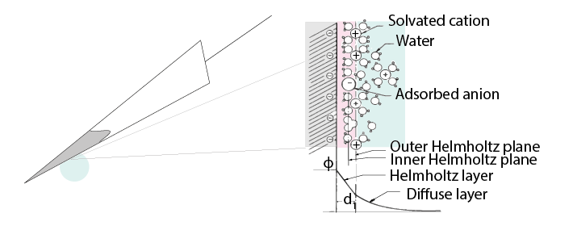
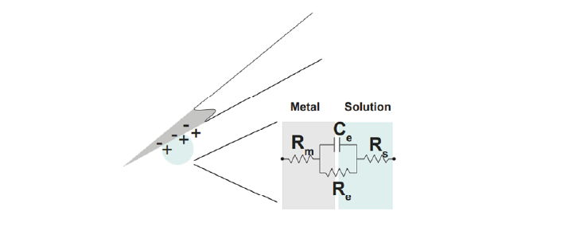

How do electrodes detect extracellular signals?#
There are many different types of electrodes. All of them will be made of materials that conduct electricity. Electrodes can be as simple as a metal wires inserted directly into the brain.
Neuronal action potentials cause the flow of ions in the extracellular fluid, which induces a subsequent rearrangement of charge inside the electrode, introducing the neuronal signal into our acquisition system.
There are two general ways in which this can occur, depending on the electrode material. In nonpolarizable electrodes, charge can cross directly between the surface of the electrode and the extracellular fluid. The well-known silver-silver chloride (Ag-AgCl) electrode approaches the ideal nonpolarizable type. In these ‘charge transfer’ electrodes, surface-confined species are oxidized and reduced (Bard & Faulkner, 2001, Merrill et al., 2005).
The tungsten microelectrode is considered a ‘polarized’ electrode. In polarized electrodes, direct charge transfer is not possible. Instead, the electrode and the extracellular fluid become two sides of a capacitor, where positive charges in the extracellular fluid are held in place by an opposite strip of negatively charged electrons in the electrode. When neuronal activity increases the number of those positive charges, the subsequent strengthening of electric force recruits more electrons to the electrode wall. Conversely, if positive charges flow away, the electric force across the capacitor is reduced, releasing electrons inside the electrode and creating a capacitive current. Without a single charge ever travelling across the interface between the electrode and the extracellular fluid, changes in one can still induce current in the other.
Read on for more details on how this occurs.
Electrodes in solution create a double layer interface#
When a metal is placed in a saline solution two phenomena occur:
Water dipoles close to the metal surface become oriented with the positive hydrogen facing the electrode.
The solution close to the metal surface become depleted of negative ions (anions), leaving behind a cloud of positive ions (cations).
This results in two narrow regions of equal and opposite charge. This is known as the electrical double layer (EDL). The double layer region (represented in pink in the schematics) has the ability to separate charges on both sides, and therefore has a capacitance ‘|Ce|’. The double layer also opposes the direct flow of current across it, and therefore has a resistance ‘|Re|’.
The equivalent circuit of the double layer#
We can describe the electrical behaviour of electrodes by making an ‘equivalent circuit’, getting rid of the specific shape or material and just representing the electrical properties of the double layer interface:
In the above figure, the double layer interface between the solution and the electrode is represented by a parallel resistance and capacitance, in combination with resistances |Rm| (metal) and |Rs| (solution) in series.
|Re| represents leakage resistance of the electrode; the charge transfer due to charge carriers crossing the electrical double layer.
|Ce| is the capacitance of the electrical double layer at the interface of the exposed metal and the solution.
|Rm| (metal) is the resistance within the electrode itself, which depends on what the electrode is made of.
|Rs| (solution) is the resistance of the fluid surrounding the electrode.
Because the resistance of the extracellular fluid |Rs| is small and independent of the electrode or acquisition system, we often simplify our equivalent circuits by leaving this value out.
Non-polarizable electrodes#
Non-polarizable electrodes have a small |Re|, allowing charge-transfer across the electrode-solution interface. If Re is small, it bypasses the capacitor |Ce|, thus providing a direct path for the measurement of steady potential levels.
Polarizable electrodes#
Polarizable electrodes have large |Re| values, in the order of several megaOhms, and so they resist direct flow of charges across the double layer. Instead, the transition from ion flow in the solution to electron flow in the electrode is capacitive. The double layer will separate charges, with negative charges inside the electrode and positive charges on the side of the extracellular fluid holding each other in place. When cellular activity causes a redistribution of ions in the extracellular fluid, the resulting increase or decrease in attractive force will recruit or release electrons in the electrode. Either direction, a current will flow inside the electrode.
Therefore, processes in polarizable electrodes are purely electrostatic and caused by the charging and discharging of the double layer capacitance. Although charge does not cross the interface, currents inside the recording system can flow when the potential or solution composition changes (Cooper, 1971).
To give an example of a polarized electrode, a tungsten microelectrode like the one used by Hubel and Wiesel in the 1950’s and 60’s has:
References#
Bard, A. J., & Faulkner, L. R. (2001). Electrochemical methods Fundamentals and Applications. Molecular Biology (Second, Vol. 8). John Wiley & Sons, Inc.
Merrill, D.R., Bikson, M., and Jefferys, J.G.R. (2005). Electrical stimulation of excitable tissue: design of efficacious and safe protocols. Journal of Neuroscience Methods 141, 171–198.
Musa, S., Rand, D.R., Cott, D.J., Loo, J., Bartic, C., Eberle, W., Nuttin, B., and Borghs, G. (2012). Bottom-Up SiO2 Embedded Carbon Nanotube Electrodes with Superior Performance for Integration in Implantable Neural Microsystems. ACS Nano 6, 4615–4628.
Nelson, M.J., Bosch, C., Venance, L., and Pouget, P. (2013). Microscale Inhomogeneity of Brain Tissue Distorts Electrical Signal Propagation. J. Neurosci. 33, 2821–2827.
Ray Cooper. (1971). Recording Changes in Electrical Properties in the Brain in Methods of Psychobiology. (R. D. Myers, Ed.) (Volume 1). London and New York: Academic Press.